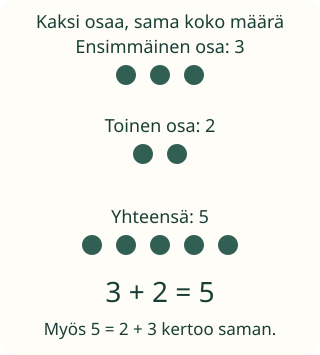

<link rel="stylesheet" href="lesson.css">
<section data-b03="M-REP-04">
<section data-teaching-step="1" data-lesson-role="teaching-step">
<h2>Aavan kuvan merkkikieli</h2><div class="lesson-intro"><p>Aava haluaa muistaa retken kivikasan. Voiko kuvan ajatuksen kirjoittaa lyhyesti?</p></div><p><strong>Tavoite: esitän tutun tilanteen numeroilla ja merkeillä.</strong></p>
</section>


<section data-teaching-step="2" data-lesson-role="teaching-step">
<h3>Tee ensin käsillä</h3><p>Laita pöydälle kolme ja kaksi kiveä. Tuo osat yhteen. Kiviä on viisi. Merkitsemme osat luvuilla 3 ja 2, koko määrän luvulla 5.</p>
<figure data-lesson-role="worked-example"><figcaption>Plus yhdistää osat. Yhtäsuuruusmerkki kertoo, että puolilla on sama arvo.</figcaption></figure>
</section>


<section data-teaching-step="3" data-lesson-role="teaching-step">
<h3>Tulos voi olla myös vasemmalla</h3><p>3 + 2 = 5 ja 5 = 3 + 2 ovat molemmat tosia. Myös osien järjestyksen voi vaihtaa: 2 + 3 = 5. Merkki = ei tarkoita vain ”kirjoita vastaus perään”.</p>
</section>


<section data-teaching-step="4" data-lesson-role="teaching-step">
<h3>Uusi tilanne: jotakin otetaan pois</h3><p>Rasiassa on kuusi nappia. Kaksi otetaan pois. Neljä jää. Kirjoitamme 6 − 2 = 4. Myös 4 = 6 − 2 kertoo saman. Miinus sopii pois ottamiseen.</p>
<p><strong>Mieti ensin:</strong> mitä luku 2 tarkoittaa kivikuvan merkinnässä?</p>
</section>


<section data-teaching-step="5" data-lesson-role="teaching-step">
<section class="practice" aria-label="Lyhyt harjoitus" data-audience-columns><div data-visual-column><h3>Kuva ja oma merkintä</h3>
<p data-context>Kolme ja kaksi kiveä yhdistetään. Rakenna näistä luvuista yhteenlasku ja näytä myös koko määrä.</p>
<div class="scene" data-model></div>
<p data-model-text>Aluksi kolme. Kaksi tulee lisää. Yhteensä viisi.</p>
<div class="controls"><button type="button" data-action="step">Seuraava kuvan vaihe</button><button type="button" data-action="model-reset">Kuva alkuun</button></div></div><div data-response-column><p>Valitse lukujen ja merkkien paloja. Voit poistaa viimeisen palan. Kumpikin puoli voi olla ensin.</p>
<div class="controls" data-palette></div>
<output class="chips" data-expression aria-live="polite">Oma merkintä odottaa.</output>
<div class="controls"><button type="button" data-action="undo">Poista viimeinen pala</button><button type="button" data-action="clear">Tyhjennä merkintä</button><button type="button" data-action="check">Tarkista merkintä</button><button type="button" data-action="context">Kokeile pois ottamista</button></div>
<p data-feedback role="status">Kokoa oma merkintä.</p></div></section>
<details data-lesson-role="hint"><summary>Apua</summary><p>Kuvassa: kolme on yksi osa, kaksi toinen osa ja viisi koko määrä. Tarvitset lukujen lisäksi laskumerkin ja =-merkin. Aikuinen voi lukea merkit.</p></details>
</section>


<section data-teaching-step="6" data-lesson-role="teaching-step">
<details data-lesson-role="teaching-step"><summary>Kokeile lisää</summary><p>Piirrä kuva, joka sopii merkintään 4 = 6 − 2. Voiko samaan kuvaan sopia myös 6 − 4 = 2? Kerro, mitä siinä kysytään.</p></details>
</section>

<details class="teacher" data-lesson-role="teacher-note"><summary>Aikuiselle: sisältöoletukset ja rajat</summary><p>Prosessitunti, luokat 1–6. Tässä tarvitaan esimerkin yhteenlaskun sekä merkkien + ja = merkitykset. Pois ottamisessa tarvitaan myös vähennyslasku ja −. Jos sisältö on uutta, käsitelkää sitä ensin konkreettisesti. Dynaaminen sisältöoletus ei ole uusi pakollinen graafikaari.</p><p>Harjoitus rakentaa rajatun yhtälön merkkipaloista. Kaikkia samoilla luvuilla ja tämän kierroksen laskumerkillä tehtyjä tosia yhtälöitä hyväksytään, myös puolten vaihto. Se ei arvioi käsin kirjoittamista tai yleistä esittämistaitoa. Harjoituksessa ei ole kertolasku- tai suuruusmerkkipakkoa.</p><p>Ilman laitetta: tehkää luku- ja merkkikortit. Lapsi esittää tutun tilanteen ja aikuinen kysyy, mitä kukin luku tarkoittaa. Ääneen vastaamista ei vahvisteta laitteella.</p></details>

<section data-teaching-step="7" data-lesson-role="teaching-step">
<p data-lesson-role="question"><strong>Lopuksi:</strong> mitä yhtäsuuruusmerkki kertoo?</p>
</section>
</section>